Introduction
Normally I'm pretty self-deprecating about these guides, but I felt like this one came together pretty well. Now I'm in no way suggesting this is a perfect guide to playing with Sela, but as you'll be able to see in the starting strategies section, Sela has some ideal moves right from the start. If you want to see this in action, I'd suggest watching Paul Grogan's Sela v. Sisko multiplayer game, which I'll link to again below in that section. Otherwise, I hope you enjoy this guide to one of the more complex decks in the base set of Star Trek Captain's Chair. As a side note, I started working on this guide before the expansion announcements, and am thrilled we're getting 150% more captains in the next 6-12 months. I plan to have all of the guides for the base game done well before then. Anyway, onto Denise Crosby's Sela.
↑ back to topCaptain Board
Sela's captain board comes with basic side track multipliers maxing out at 5x for all tracks. The advanced side's thresholds are one less.
↑ back to top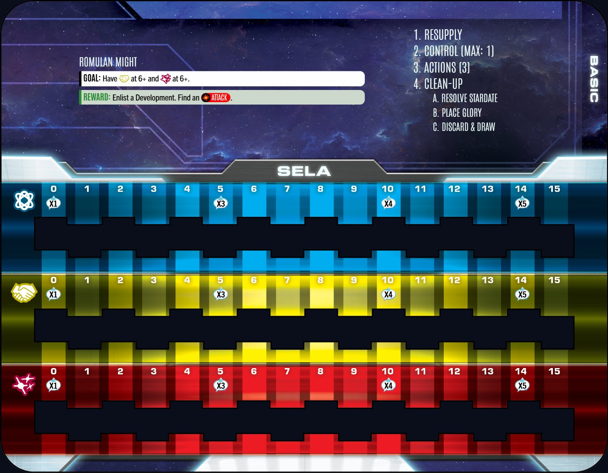
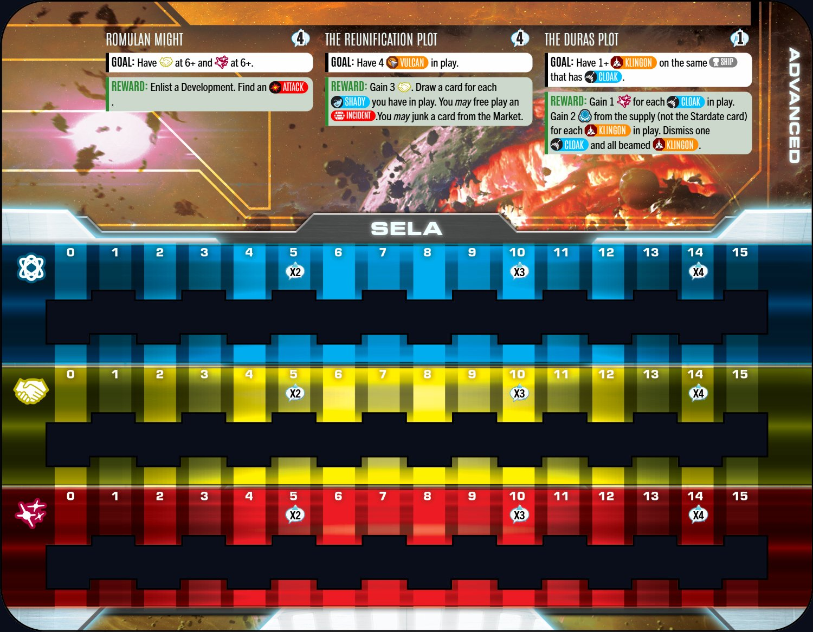
Missions
Her base side mission is called Romulan Might, which requires six Influence and six Military to complete. Sela has plenty of ways to boost her Influence, but the earlier you can get the reward the better. That reward lets you enlist a development and find an attack card. Sela's advanced side gives you four points for Romulan Might.
Additionally you can get 4 more points from completing The Reunification Plot, which requires 4 Vulcan tags in play. While there are only five market cards, one encounter, and one reserve card that currently have this tag, Sela's Captain ability can help accomplish this mission. The reward is three influence, a card draw for each Shady tag in play, an Incident free play, and junking a market card. This is a pretty good spread of benefits, though intentionally finding some additional Shady cards prior to completion is the most obvious way to maximize the benefit.
The final mission is The Duras Plot, which only gives one printed point and requires one or more Klingon tag on the same ship that has the Cloak tag. This one is interesting, because it's not exactly difficult, but you want to try to get at least 2-3 Klingons in play before using it. The reward is one military per Cloak tag in play, and two glory from the supply for each Klingon in play. You also have to dismiss the cloak and all beamed Klingons. Likewise you get glory from every Klingon in play, not just the ones beamed to the ship.
↑ back to topCaptain Card & Starting Components
Sela has four away teams, the current lowest in the game, as well as the Human, Romulan, and Shady tags. She has a reaction that encourages attacks against your opponent, providing you a Dilithium or Latinum when you do. If you would rather spend an action token, you can discard either her Infiltrate or Conquer directives and spend three Latinum to scan for Klingon, Vulcan, or Starfleet cards. The first two are useful for her missions, but I probably wouldn't spend that much on Starfleet unless I knew what I was getting. Sela scores one point at endgame for each Attack card you have as long as they don't also have the Romulan or Reman tag.
She starts with the I.R.W. Goraxus deployed, which is a Romulan/Cloak ship with standard activation abilities. The play action allows it to deploy, and you can send an away team to any planet even if another player has more ships than you. This ability is typical for all cloaked ships. It also has a Military Skill.
↑ back to top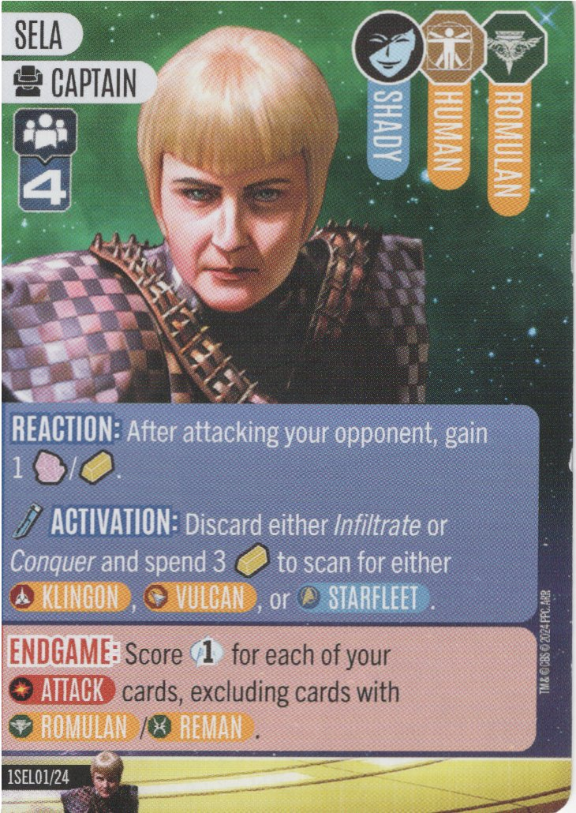
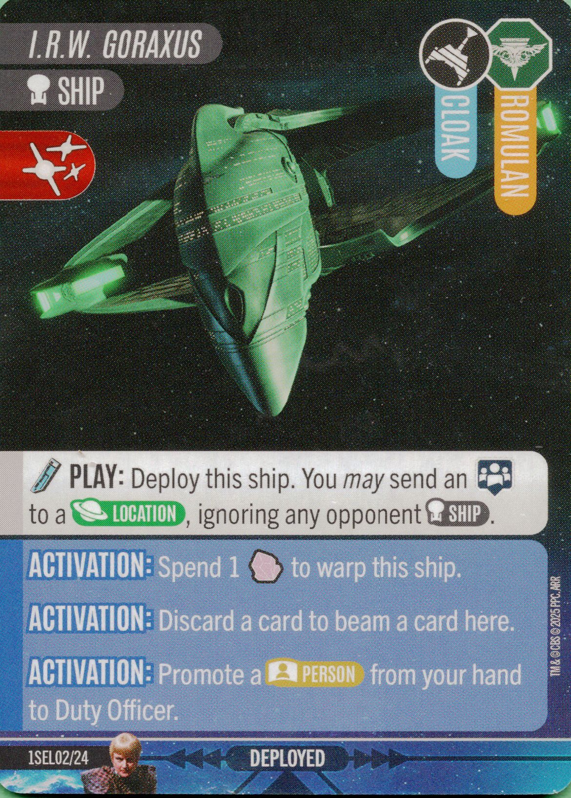
Sela's Available & Discarded Cards
Sela has a 7 card starting hand of available cards. There are two Person cards, two locations, one cargo, one ship, and one directive. She also starts the game with a directive, ship, and Ally in her discard pile, and I'll review these as well before going over starting strategies.
↑ back to topSub-Commander T'Rul (Person)
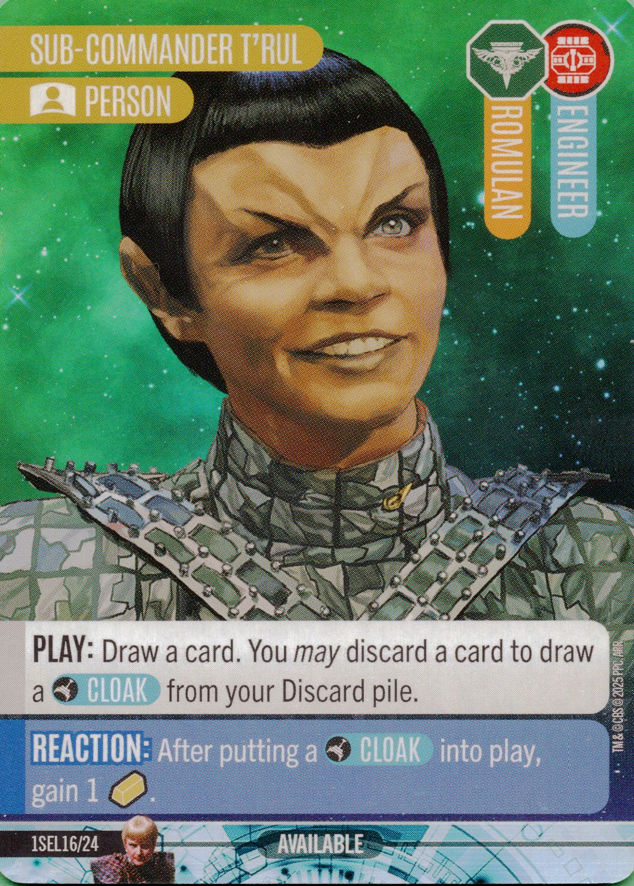
A free-play action, T'Rul allows for a card draw, and then you may discard a card to draw a Cloak from your discard pile. This means that from the start of the game, you'll be able to get the I.R.W. Terix out of your discard pile and into your hand. Her reaction allows for a Latinum gain for putting a Cloak tag into play. It has its uses, specifically if you're cycling your ships in and out of play with frequent location control, and is your best consistent way to get Latinum besides Sela's reaction, which can help with her Activation.
↑ back to topGeneral Movar (Person)
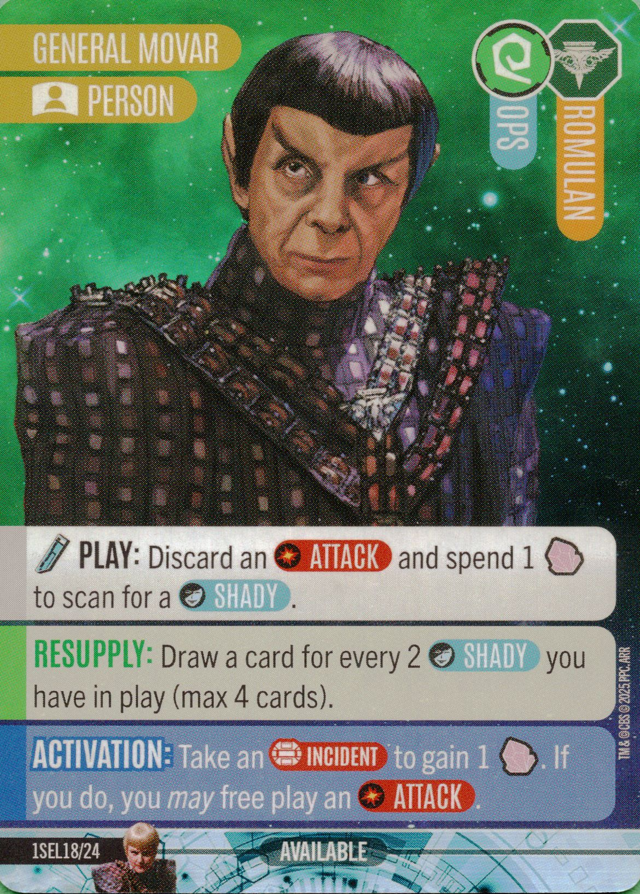
The only Romulan person we actually see taking any orders from Sela in the series, Movar gives players the ability to scan for Shady cards. This is helpful for Sela's second mission (which gives card draw for Shady cards as its reward) and many Shady cards incidentally have an Attack tag as well. His resupply is fine for card draw, but only if you have a lot of Shady cards in play, and other than Sela herself there are no Shady tags in your deck. His activation allows you to gain a Dilithium and free play an attack at the cost of an incident, which isn't terrible but does mean you'll be taking frequent incidents to make use of this activation ability.
↑ back to topRemus (Location)
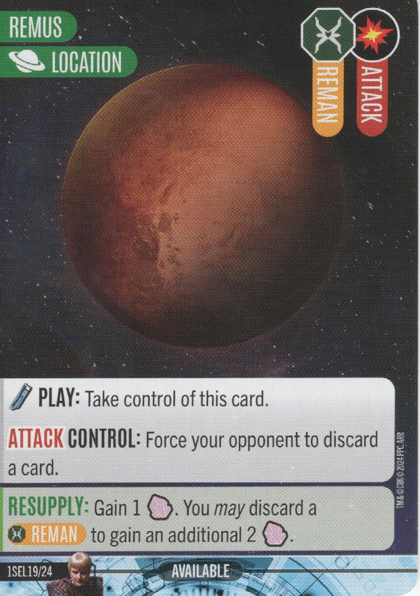
The sister planet to Romulus, Remus has both an Attack and Reman tag. Control forces your opponent to discard a card (useless in solo). Its resupply is beautifully thematic, giving you a Dilithium each round, with an extra two Dilithium if you discard a Reman.
↑ back to topRomulus (Location)
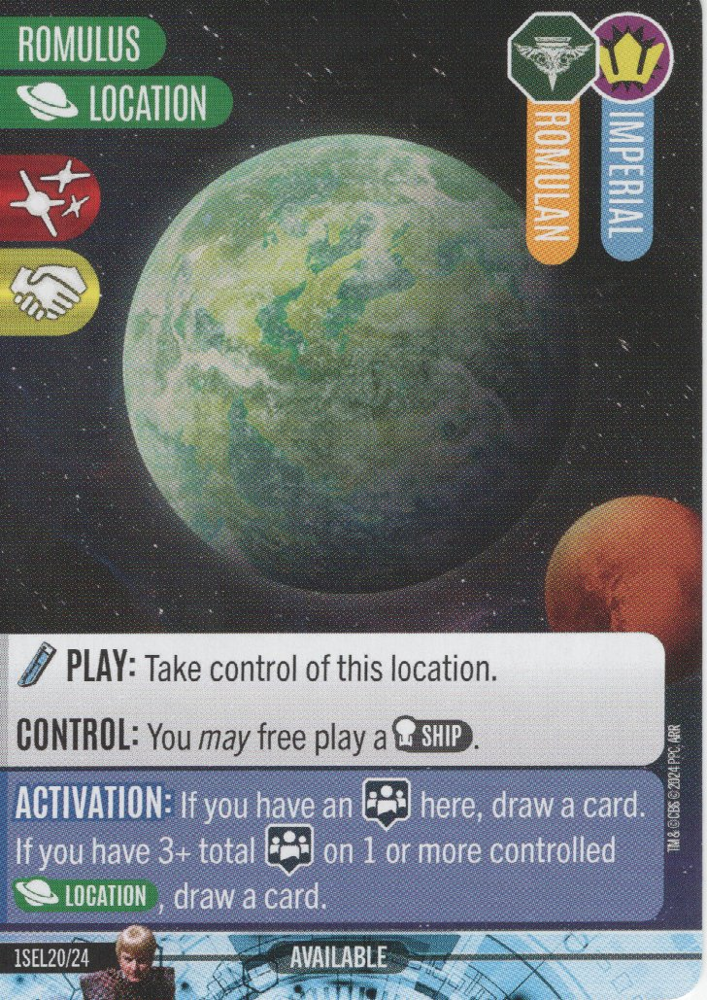
Romulus has an Influence and Military skill, along with Imperial and Romulan tags. Its control gives a free-play of a ship, which is almost always useful for Sela. It has the same activation as Farpoint/Andoria/Qo'noS, providing card draw depending on your away teams on controlled planets. This will be difficult for Sela as she only has four away teams, but there is an ideal cycling strategy to expand upon below.
↑ back to topDisruptor Rifles (Cargo)
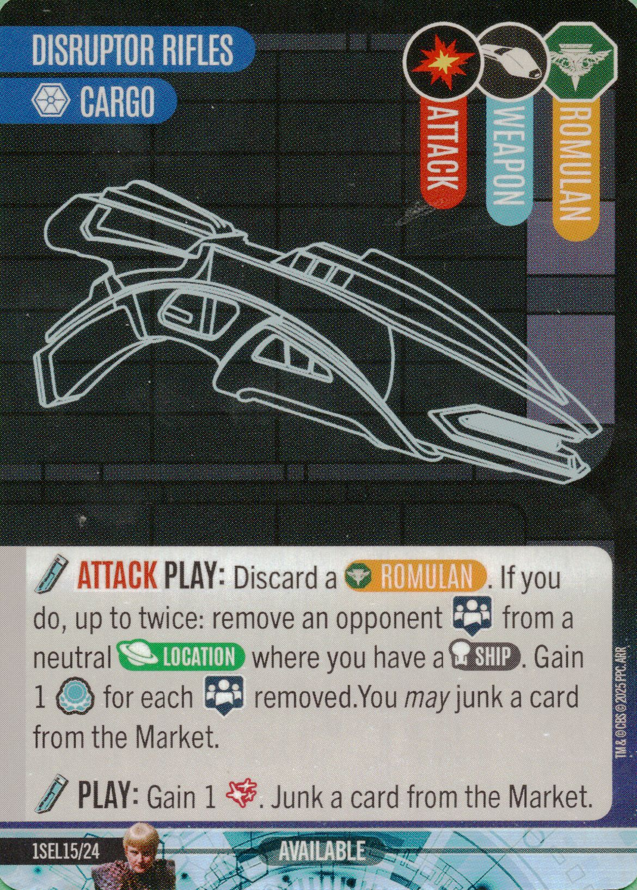
I love Disruptor Rifles, especially against an aggressive opponent. The opportunity to remove two opponent away teams AND gain two glory for only the cost of a Romulan tag discard? That's efficient. Alternatively you can gain a Military and junk a market card, but that was usually a last-resort in my gameplay.
↑ back to topI.R.W. Khazara (Ship)
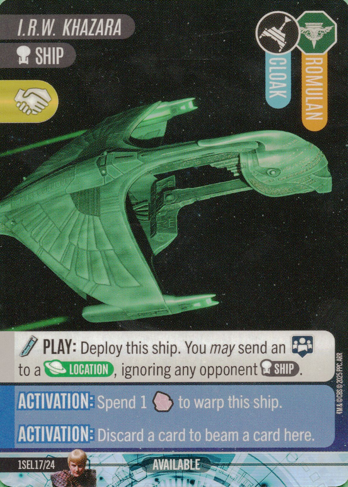
A pretty standard Romulan vessel, the Khazara allows for sending an away team to any location, along with standard warp and beaming table operations. It also has an Influence skill, which is useful and necessary for Sela's first mission completion.
↑ back to topInfiltrate (Directive)
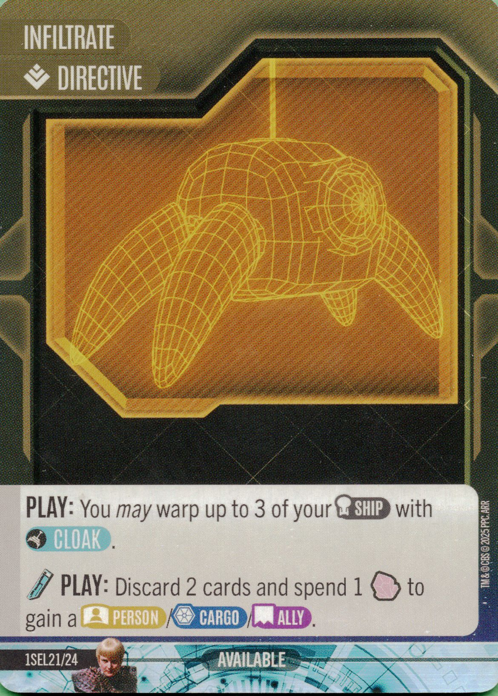
Infiltrate is an interesting card, because it really has three play operations. The first is a free-play, and lets you warp up to 3 of your ships with the Cloak tag. Useful, especially with an ideal opening and the three cloaked ships you start with. The second operation costs 2 discarded cards and a Dilithium for a Person/Cargo/Ally. It's a bit steep, but sometimes necessary considering Sela's limited market access via directives. Finally, Infiltrate can be discarded as part of Sela's Activation that costs an action token and three Latinum.
↑ back to topUtilize (Directive) — Discard Pile
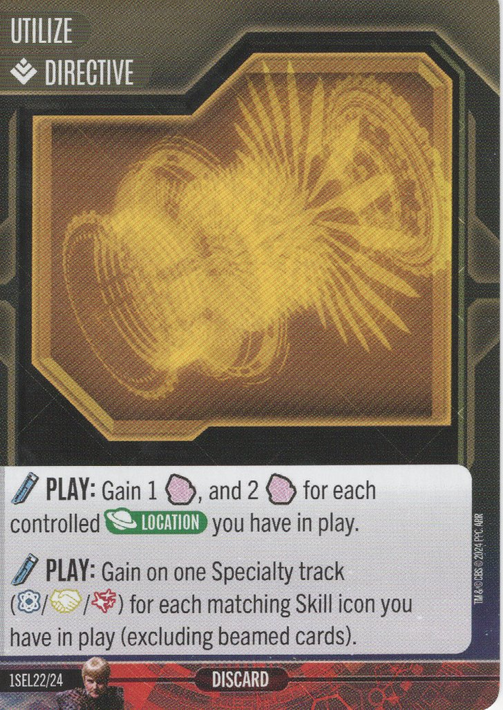
The standard Utilize Directive, there's nothing really unique here to discuss except that it starts in the discard pile and Sela won't be able to get to it until at least round two.
↑ back to topI.R.W. Terix (Ship) — Discard Pile
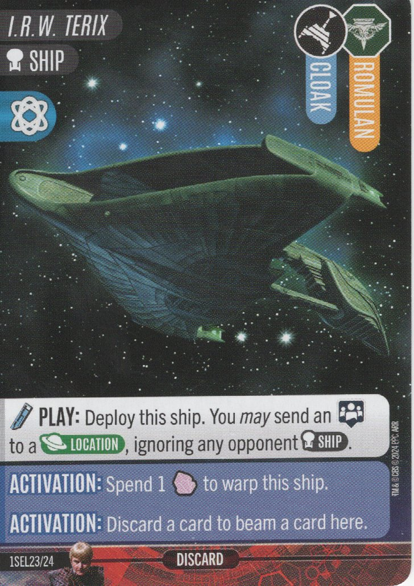
Almost identical to the Khazara, the Terix has exactly the same text but a Research skill instead of an Influence. Sela's three starting ships each have a different skill, making specializing in one particular track somewhat difficult but allowing for options.
↑ back to topRemans (Ally) — Discard Pile
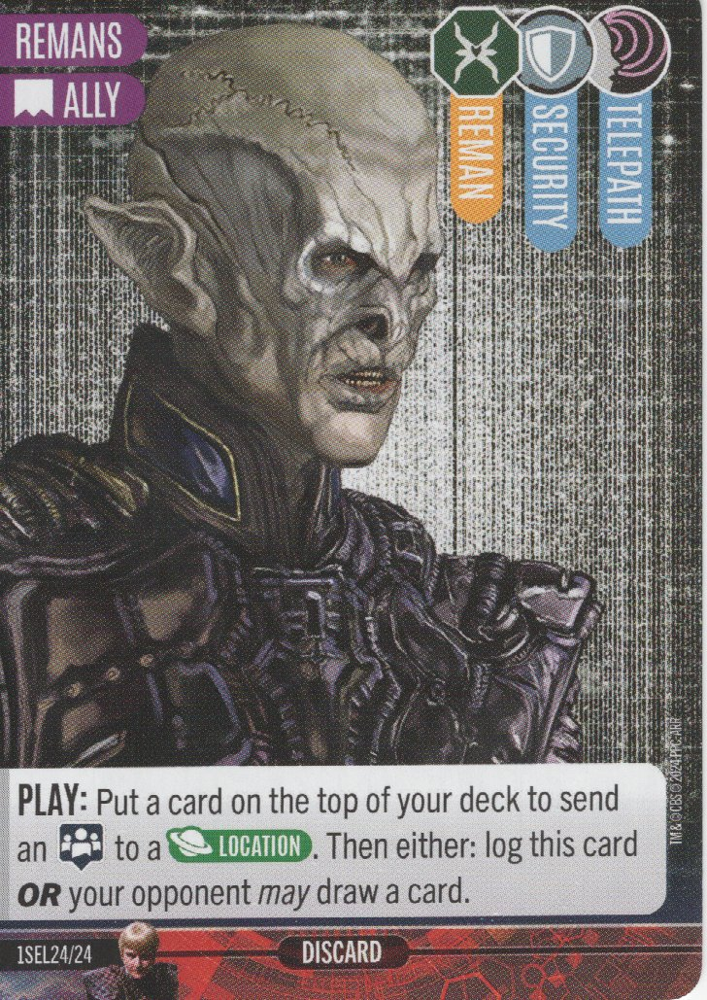
The Reman ally is an odd one, as it gives a free-play away team at the cost of putting a card on top of your deck. Then you have to either log the Remans or your opponent may draw a card. There's a lot of reasons not to log them, considering their use with Shinzon and the Scimitar later on in the game, the ability to discard them for Dilithium with Remus' Resupply, and the use of the away team without an action token. But your opponent will get to draw a card as well. I consider the trade-off to be similar to Shran's You Owe Me One, and would usually not log the card right away, if at all, until later. That being said, if you're worried about deck bloat and not particularly concerned with either the Dilithium from Remus or focusing on Shinzon and the Scimitar, then log away.
↑ back to topStarting Hand Strategies
I really do suggest watching Paul Grogan's Sela vs. Sisko multiplayer game for a really good starting turn. In my opinion, it is very close to the best possible Sela opening. He starts with Romulus, I.R.W. Khazara, Remus, T'Rul, and Movar. He plays Romulus to free-play the I.R.W. Khazara, sends an away team (to the Ancient Relay Station). He plays Remus, activating Sela's reaction and gains a Dilithium. He then plays T'Rul, draws Infiltrate, then discards Movar to get the I.R.W. Terix. He plays the Terix, sending an away team to Romulus. He activates Romulus to draw Disruptors. He then uses the free action on Infiltrate, which allows him to warp all three ships. There are only two things I would have done differently. The first would have been to get an away team on Romulus first so that I had the extra card draw early. I would also have tried to discard Romulan Disruptors instead of Movar so I could promote Movar to duty officer.
This starting strategy requires both Romulus and T'Rul in hand. If you don't have either one, you're not going to get it accomplished. Thankfully, Sela only has 7 available cards so the chances of getting either T'Rul and Romulus are actually quite high. If you have T'Rul and not Romulus, you get to use her ability to draw one card, which means you have a 50% chance, and you'll still get to use her ability to draw the Terix. If you have Romulus but not T'Rul, then the only situation you're stuck in is if you also don't have the Khazara. And if you have both but no Khazara, you can still use T'Rul to get the Terix and then send that away team to Romulus.
If you don't have Romulus after using T'Rul, I'd suggest still using two of your tokens to play the Terix and Khazara, sending two away teams to your neutral location of choice, then using Infiltrate to send all three away teams out to neutral locations. I'd usually prefer to send them to 3 different locations so that your opponent can't get any away teams out until they get a ship out. Also, make sure you don't use the Goraxus for control so you can still use the Goraxus for promoting Movar to duty officer.
Errata: Nonprophet on the discord wanted to point out that you can use Movar specifically to get the two ships with Shady tags, the Kazon and Son'a, which both work well with Sela's kit. I think it's worth pointing out that even with Romulus and T'Rul this could be worth considering as a good opening play. It's not the one I'd usually go for round one, but I do think it's strong.
↑ back to topSela's Reserve Cards
Sela has six reserve cards consisting of two Person cards, three directives, and one Incident. I'll review them individually then discuss.
↑ back to topConfiscate (Directive)
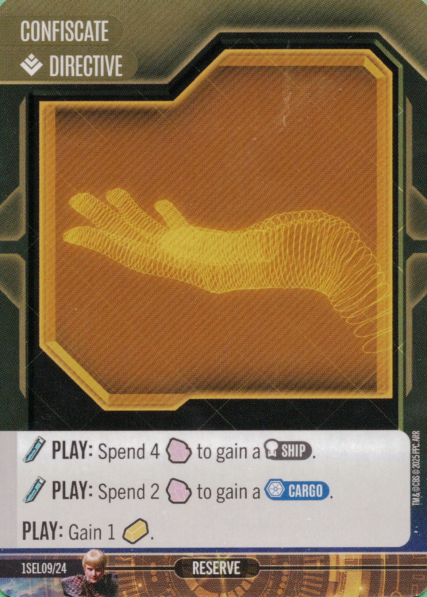
Confiscate shows up in Shran and Koloth's available cards, but Sela has to wait around for it to pop up in the reserves. If Sela has a surplus of Dilithium, it's worth using it to get Ships (four Dilithium) and Cargo (two Dilithium). And if action tokens are in short supply, grabbing a Latinum for free isn't a bad call.
↑ back to topEnergy Drain (Incident)
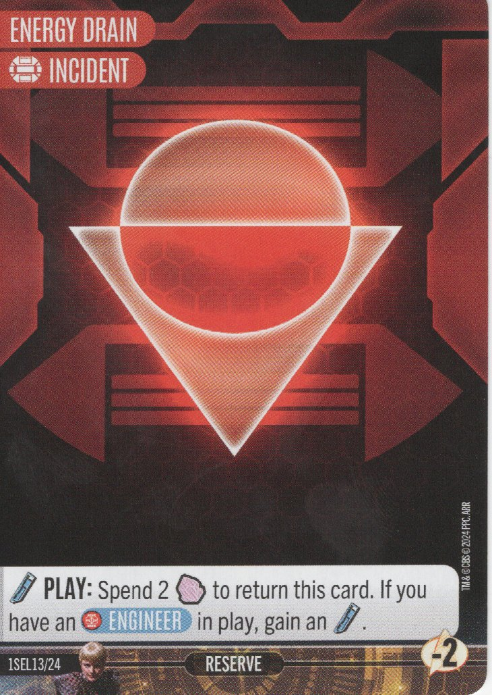
Identical to the Incident deck, Energy Drain costs two Dilithium to return to the Incident Deck. If you happen to have T'Rul or another Engineer tag in play, you get your action token back.
↑ back to topImperial Pride (Directive)
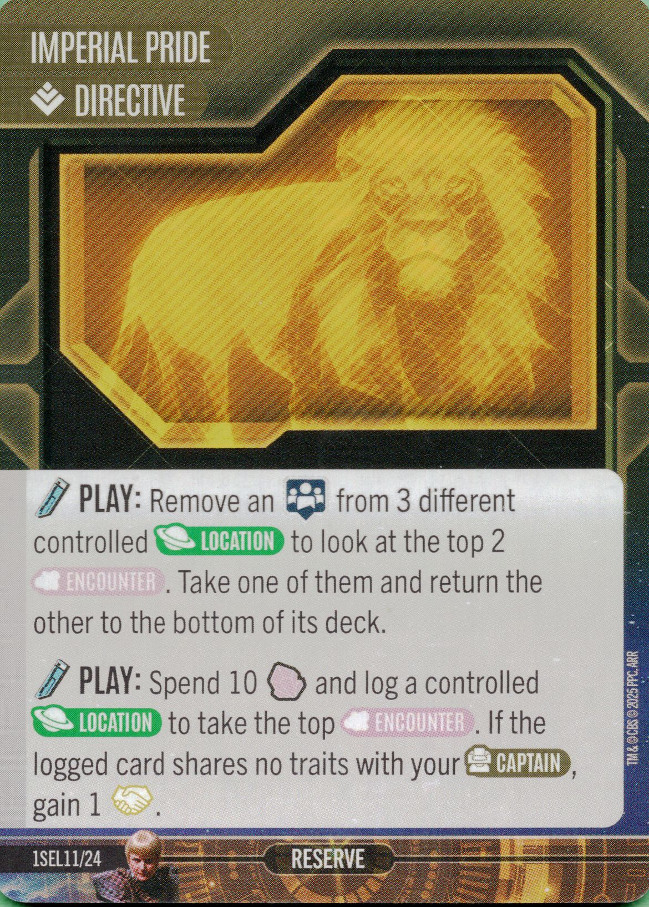
Imperial Pride also shows up in Shran's available cards, but I kind of like it in the Reserves more. You're not going to use it immediately in most cases, and it gives you time to grab an extra ship or two before committing away teams to controlled planets. Getting three away teams on controlled planets on the same turn you get Imperial Pride is ideal, both for the two card-draw from Romulus and then so you can be as efficient as possible with getting them back out for use. If you've been using Utilize to gain a ton of Dilithium, you could also consider spending ten Dilithium to get a random encounter and maybe gain an Influence.
↑ back to topConquer (Directive)
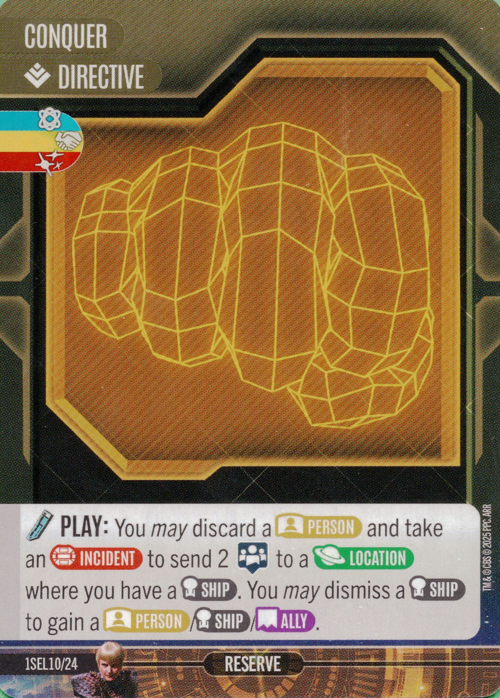
Conquer is an interesting directive because it's a little involved. You essentially have two different actions that can be played separately or together. The first sends two away teams where you have a ship at the cost of an Incident and a person discard. Assuming you can do this, I consider it worth it for potential control. Then, you may dismiss a ship (occasionally the same one at the planet you had away teams at) to gain a person/ship/ally. This is also probably worth it unless you really need to keep your ships out. You could also use T'Rul to get that ship back, potentially. Also, you get a wild skill tag while this card is in play, but that would mean using Conquer and Utilize on the same turn, which is often ideal.
↑ back to topT'Pel (Person)
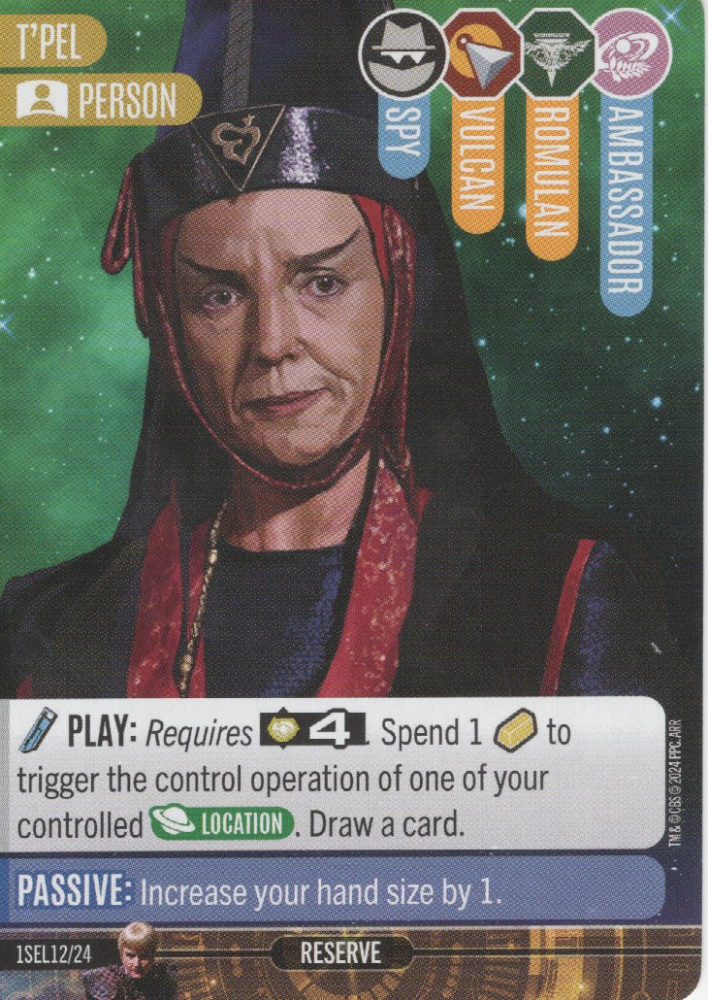
A great one-off character from the episode Data's Day, T'Pel (or should I say, Sub-Commander Selok) has a great set of tags including Spy and Ambassador, as well as Vulcan which is crucial for accomplishing The Reunification Plot Mission. Her play action requires four Influence and costs one Latinum for a card draw and, more importantly, triggers the control operation of one of your controlled locations. This can vary in usefulness but using Romulus to free play a ship will never be a terrible option. Finally, as a Duty Officer she increases your hand size by one.
↑ back to topTomalak (Person)
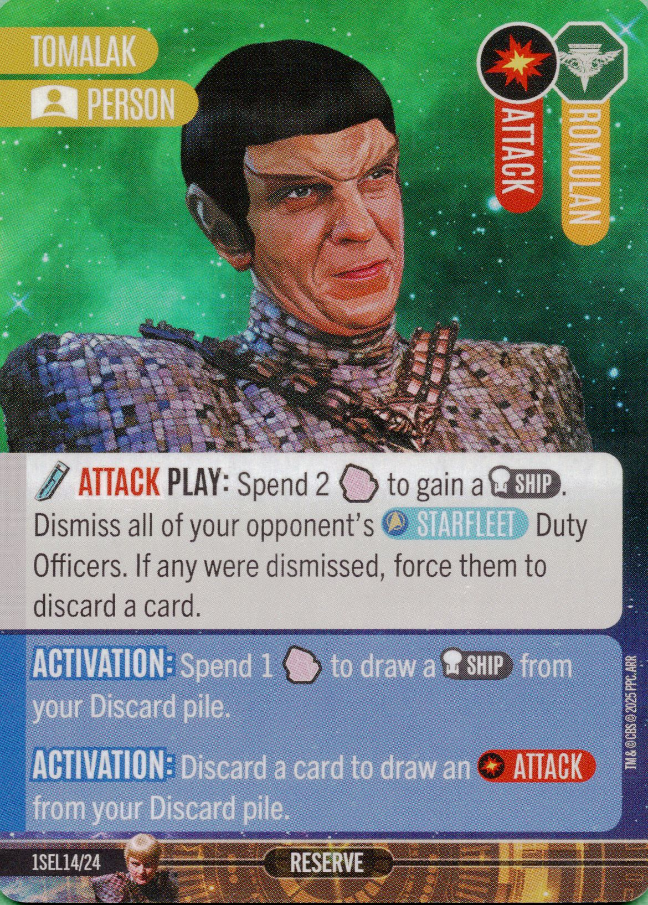
If you had told me there would be a Romulan captain deck before this game came out, I probably would have picked Tomalak over Sela. But his place in the Reserves is well-deserved as Picard's constant Romulan foe. His action gets you a ship cheaply (two Dilithium) with a great attack against a Starfleet captain. His place as a duty officer is excellent too, as you can draw ships from your discard pile for one Dilithium, or discard a card to draw an attack card from the discard pile. That flexibility is great.
This is one of the worst decks for Reserve deck momentum, because it does have six cards. Still, you get to grab one after the first turn, and depending on what you get you can adjust as needed. Half the cards allow for you to get more ships (Conquer, Confiscate, Tomalak), and while that's not always needed, it's nice to maintain control over the neutral zone by completely overwhelming your opponent with ships while you use your away teams for Imperial Pride.
↑ back to topSela's Development Cards
Sela has six Development cards including three Persons, two Ships, and one Cargo. Sela's developments fall into two camps, but more on that after some basic discussion.
↑ back to topDonatra (Person)
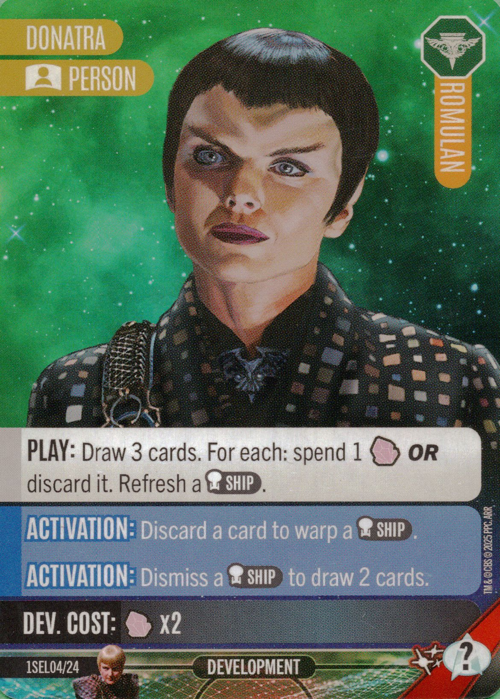
Dev Cost: 2 Dilithium
An underrated diplomatic ally for Picard in Nemesis, Donatra has a free action that gives her three cards. Unfortunately, you have to discard those cards or spend a Dilithium for each one you want to keep. Refreshing a ship isn't bad, especially if it's the Valdore. Her Activations give you an alternate warp condition (card discard) or two card draw if you dismiss a ship. Sela has a lot of ships so you can often afford it, and if consistent card draw is your issue she can be a great Duty officer. She scores for Military Focus.
↑ back to topProconsul Neral (Person)
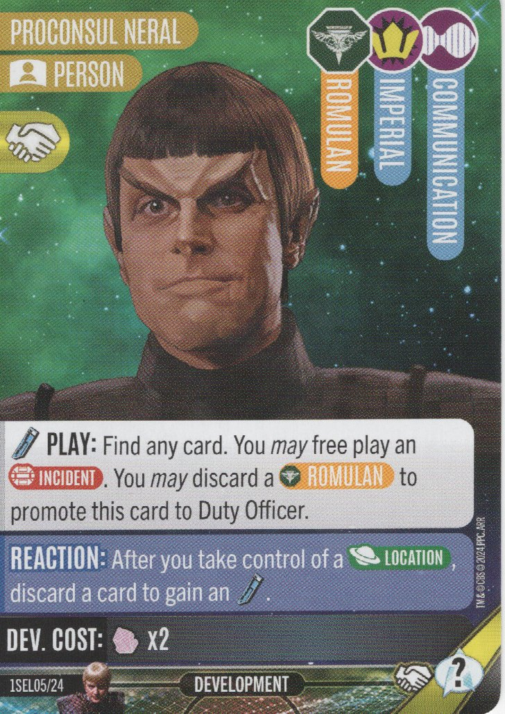
Dev Cost: 2 Dilithium
In addition to a Communication and Imperial tag, Neral has an Influence skill which is nice when you have him in-play. His action lets you find ANY card, which is incredible if you manage to get him before you've finished off your reserve pile. Then he also lets you free play an Incident, and he gets an auto-promotion to duty officer if you discard another Romulan. As a duty officer, he's equally awesome, giving you an action token whenever you control a location, at the low cost of a card discard. He scores for Influence focus.
↑ back to topI.R.W. Valdore (Ship)
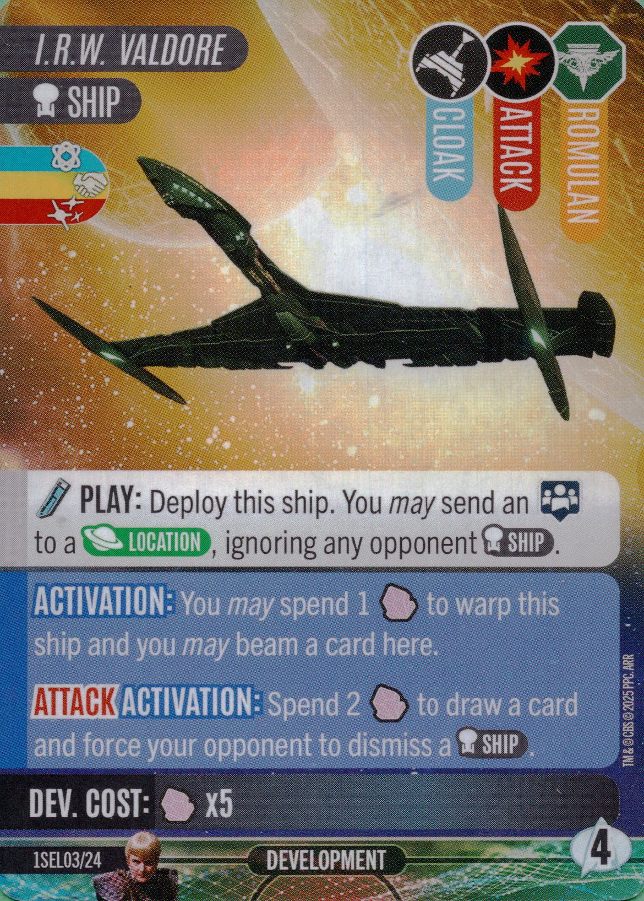
Dev Cost: 5 Dilithium
The Valdore gets a wild skill in addition to the standard play action for cloaked ships. But it's great because of its two Activations. The first allows you to warp and beam a card for the sole cost of one Dilithium. The second is an attack, where you can force your opponent to dismiss a ship and draw a card for two Dilithium. In Paul Grogan's video, he got this development from Ancient Relay Station on turn two, which was great for consistently dismissing his opponent's ships. It scores four points.
↑ back to topForced Singularity (Cargo)
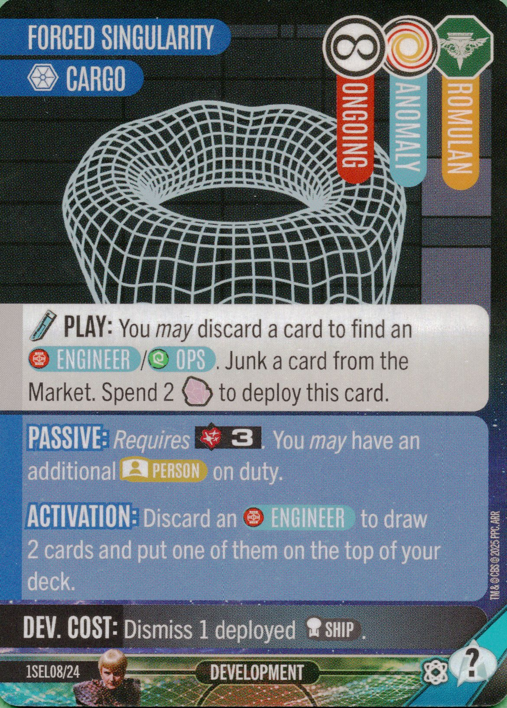
Dev Cost: Dismiss 1 deployed ship
This cargo (representative of the Romulan warp core) is also in the cargo deck. It lets you find an Engineer or Ops card and for 2 Dilithium you can deploy the card to your fleet area, plus a market junk. The passive ability is probably the most useful, allowing an additional person on duty once you have 3 Military skill. You also can discard an engineer to draw two cards and put one on your deck. Because T'Rul is an engineer, you already have a card in your deck that works really well with it. This card gains endgame points for a Research Focus, which is kind of in counter to the military requirement of the passive ability, but I really like getting extra duty officers in play so whether you're getting points or not it's often worth it.
↑ back to topScimitar (Ship)
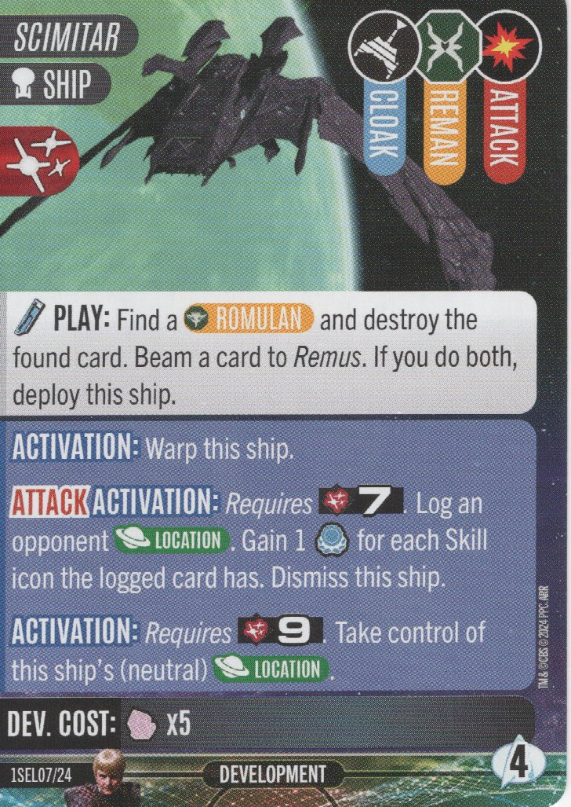
Dev Cost: 5 Dilithium
Fifty-two disruptor banks, twenty-seven photon torpedo bays, primary and secondary shields. No tachyon emissions, no residual antiprotons. The Scimitar was visually and tactically impressive, and its abilities are no different. The play action is a bit steep, requiring you to destroy a card with a Romulan tag. You also have to beam a card to Remus, and if you do both, you can deploy the ship. Wonderfully thematic, as well as mechanically necessary since the Activations on the Scimitar are so powerful. You get a free warp from the first one. The second Activation requires seven military skill — you log an opponent's controlled location and you gain a glory for each skill the logged card has. The last one requires nine military skill, and allows you to take control of the Scimitar's neutral location, even if you haven't secured it (or even if your opponent has). "She's a predator." And she scores four points.
↑ back to topShinzon (Person)
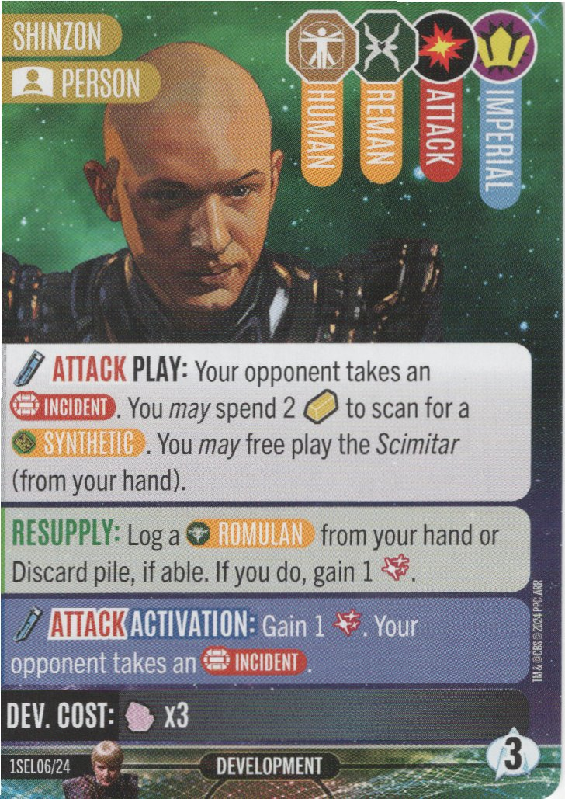
Dev Cost: 3 Dilithium
Tom Hardy himself, he gets the Human and Reman tags along with Imperial and Attack. His play action forces your opponent to take an incident, spend two Latinum for a Synthetic (because B-4) and you can free play the Scimitar (from your hand). His resupply has you log a Romulan from your hand or discard pile to gain a military, which is good if you're approaching endgame and wanting to thin your deck and make sure you can use the Scimitar's Activations. He also has an attack activation that costs an action token to gain a military and force your opponent to take an Incident. He scores three points.
First off, I am just going to come out and admit that I really enjoy Star Trek Nemesis. I understand I'm in the minority, but it hit me at just the right time. Because of the theme, I have a soft spot for getting Shinzon and the Scimitar. Getting Shinzon first allows you to move up the military track as well as thinning your deck from those pesky Romulans. You do have to keep enough Romulans in your deck so you can actually destroy them to use the Scimitar, but getting rid of your ships isn't a big deal when you can take over a location in one turn with the Scimitar and Donatra's refresh a ship ability. The problem with this play of course is that you kind of have to commit to it right away, and have enough rounds left to benefit from the combo repeatedly.
The alternative is to focus on the Romulans first. The Paul Grogan method of grabbing the Valdore first is a great way to mess with an opponent early in the game, but I think it's far more effective in a multiplayer game than against a bot. But it's still a very effective strategy. If I haven't exhausted my reserve deck then I often go with Proconsul Neral in order to find cards in the reserve deck and get to my other developments more quickly. I also like Donatra for speeding up card draw. Finally, there's Forced Singularity, which does allow for that second duty officer along with some card draw with T'Rul, and if I can get that quickly enough for it to be effective, is a good move.
↑ back to topPutting It All Together
Generally speaking, I see two overarching strategies that direct gameplay with Sela. The first is a focus on location control and preventing your opponent from sending away teams, all while trying to use Imperial Pride to gain encounters quickly. This starts with using and gaining as many ships as you can along with working towards getting the Scimitar and completing your Romulan Might mission. I think that this is more successful against low-ship opponents like Picard, Shran, and Burnham, but isn't always great against aggressive captains like Koloth and Sisko.
The second strategy is a pure rush-game. Get as many glory as possible and speed the game to the finish. I've had some success with this method recently against Koloth-bot, where I was able to push glory and wrap up the game fairly quickly. If you're going this route, you have to be a little more intentional to add more cards from the market, whereas with a location-controlling strategy you can get the lion's-share of your points from the locations you secure and control. This also means you'll likely get fewer encounters, and if you do it may be from the Dilithium-spending action of Imperial Pride.
This brings us to another early consideration, which is how you use Utilize. If you're going to try to rush the game, then it may make more sense to ignore your tracks (more or less) and use Utilize to fund your Dilithium haul. That way you can not only afford Imperial Pride but you also aren't worried about your limited Dilithium draw from Remus and can log the Remans right away. You're passing up some points but Sela doesn't have great focus thresholds so if you can at least pull off her third Klingon mission (which you can do with only one Klingon) then you can at least score for your focus points if you happen to get military or influence high enough to score x2.
If you do decide to focus on tracks, then getting Military and Influence up as soon as you can complete Romulan Might in order to enlist a development (likely Neral, for his Find ability) is the first priority. From there you can simply focus to whichever development makes the most sense in context of how your game is going, keeping in mind your proximity to the endgame.
I think I noted that you have some limitations in the market, mostly because your directives are a little costly and are scattered in your Reserve deck. Often you're going to find that Infiltrate, Conquer, and Confiscate are too pricey compared to benefits you can get from Movar scanning for Shady cards or Sela scanning for Klingon/Vulcan/Starfleet cards. And keep in mind that not one Development card requires Latinum so you can feel free to use Sela's ability as soon as you have the Latinum in hand.
Looking at the market, I would suggest that anything with Klingon, Romulan, or Vulcan tags are beneficial for Sela generally. You can also make good use of Talok (benefits from Imperial tags in play), Lursa (Activation benefits from Romulans and action gains ships and sends away teams), Admiral Pressman (gains three glory from dismissing a Cloak in play), and Dorg (attack and Shady, ship gain, and reactions from Shady cards) to name a few Person cards. In cargo, getting a second Forced Singularity is pretty overpowered, and you should also be able to get use out of Unstable Wormhole. You also want to snatch up Tachyon Detection Grid, even if you just log it right away, because the text is so dangerous for logging your cloaked ships. Most ships are pretty good for Sela, but the Bird of Prey goes along with the rest of her ship suite, and anything with Attack or Shady tags has the potential to uniquely benefit you.
Overall, Sela has a pretty on-rails start based on what you draw, but she can diverge pretty significantly in quick fashion. Deciding how to interact with the market, when to push the endgame, and what order you should empty out your developments and control locations with the Scimitar is the balancing act here. If you know you have a slower Starfleet opponent, I would control locations consistently, recalling ships from the discard when possible and preventing your opponent from gaining locations without a fight. Forcing the game into a match on your terms is key, because if they ignore you and start eating up significant market card and encounter points, you won't catch up as quickly. As for playing the bots, I would evaluate the aggressiveness and let that guide strategy, while also continuing to police the neutral zone, which is thematically appropriate for the cold war with the Romulans.
Video Playthroughs
Playthrough by Paul Grogan (Gaming Rules!) featuring Sela: